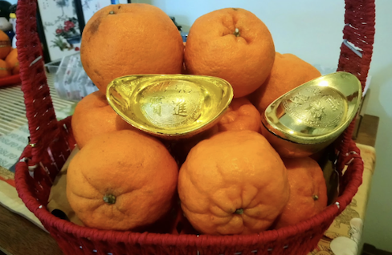
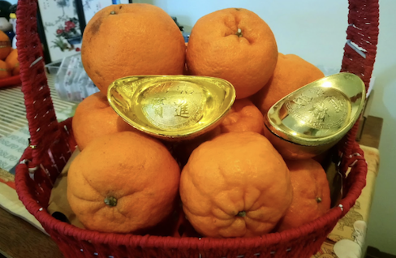
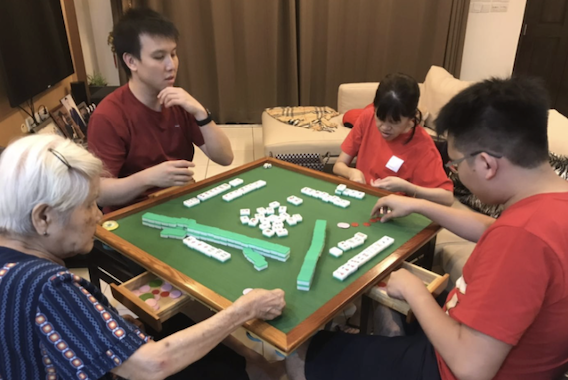

Chinese New Year in Malaysia
Chinese New Year (CNY) is typically celebrated between the end of January to mid February. Here in Malaysia, it is considered a public holiday so there would usually be a week long holiday across the country. Chinese New Year is among one of the big celebrations that are celebrated, besides Deepavali (Diwali) and Hari Raya Aidilfitri (Eid-Mubarak).
Typically most Chinese families will have a feast on Chinese New Year eve and for the first and second day of CNY, there would be family gatherings and the activities that is done varies from hanging out at one of the elder's house to travelling together. In some Chinese communities, they celebrate CNY for 15 days, with each day having a significance. Out of the 15 days, there are 2 major celebrations and they happen on the 9th and 15th day.

 

9th Day - Pai Ti Kong
On the 9th day, it is Pai Ti Kong (praying the Heaven God in Hokkien), that is a celebration important to the Hokkiens (A Chinese ethnic group) where they celebrate the birthday of the Jade Emperor of Heaven. A prominent requisite offering is sugarcane as there is a legend that during a massacre, the Hokkiens survived by hiding in the sugarcane plantation. They hid in there during the 8th and 9th day of the New Year and it coincided with the Jade Emperor's birthday. In Penang, there would be a ritual and festival in George Town to celebrate this occasion. The Hokkiens will get everything ready by the 8th night of CNY and at the stroke of midnight, they will start the prayers and fireworks would go off thoughout the night lasting for an hour sometimes.
Since my cousins who are Hokkiens (My family are Hakkas - another Chinese ethnic group) celebrate it they usually have a lot of offerings and they would share the offerings with us after the festival. Some of the offerings include thni kueh (sweet cakes), ang ku (red tortoise buns), miku (red-colored buns), huat kuih (prosperity cakes) and bright pink miniature pagodas. One of the years, my cousin gave us a huge miku, the smaller ones are usually bright pink/red in color (can be seen in the background of the photo) but this one was white with the word fu (meaning 'fortune' or 'good luck' in chinese) marked on the center
15th Day - Chap Goh Meh
On the 15th day is the Lantern Festival! It is also known as Chap Goh Meh (the fifteen night in Hokkien) by many, children and families will walk the streets carrying colorful lanterns that comes in different shapes and patterns. On this day as well, it is also celebrated by single people who are looking for a romantic partner, usually single women would write their contact on mandarin oranges and throw them into the river/lake where single men would collect and eat it. It is said that if it tastes sweet, it represents good fate while sour represents bad fate. Some common desserts/dishes that are eaten on the last day is tangyuan (sweet glutinous rice ball brewed in soup) and rice dumplings.
CNY Eve
On Chinese New Year Eve, I would have 2 feasts, a lunch feast with my mom's side of the family and a dinner feast with my dad's side of the family. For both the feasts, our families would either we would either make home cooked dishes or we would do a hot pot.


During the dinner feast, there would also be an appetizer, yee sang where it is a raw fish salad.
CNY - Day 1
On the very first day, my family would wear new clothes. To start off the day, we would give offerings and pray at our home ancestral shrine and then we would eat Buddha's Delight, a vegetarian dish.
We will take our annual family photo together with my cousins and there would be trading of mandarin oranges between the adults and then those who are married in the family will give angpow (red envelopes) that contains cash money as a form of blessing.
One would usually say Gong Xi Fa Cai (wishing you prosperity in the coming year), or zhu ni xinnian kuaile, shenti jiankang (happy new year and good health). My family would then visit the temples and the columbarium to pay respects to my grandfather, ancestors and relatives for both my dad's and mom's side of the family then my immediate family would visit my mom's relatives since my grandfather is the youngest on her side of the family. In most traditions, the older/more senior members will be visited while the younger ones will do the visiting.
CNY - Day 2
On this day, it's a more relaxed day as my grandparents are the oldest on my dad's side of the family so they will be visited by relatives. My grandma will always play Mahjong with my parents and aunt/uncle. In the recent years, the younger generations like my cousins and I picked up on playing mahjong as well and we've been playing mahjong with my grandma.

CNY - Remaining days
For me, my family are not Hokkiens and we don't really celebrate most of the remaining days besides the very last day of CNY that is Day 15. For the rest of the CNY celebration we would still receive visits from families, eat out and go shopping. Many places around have CNY decorations displayed and they would usually be displayed until a few days after Day 15.

Some CNY cookies/snacks and drinks most families will have.
The brown somewhat triangular shaped snack is called Kuih Kapit (also called Love Letters), they are wafer-thin, crisp crepes. The smaller cookie white with a pink/red marking is called Kuih Bangkit, it is made of sago/tapioca starch and coconut milk. Both these cookies/snacks are a few of the most common CNY cookies that is a must have in most families.
Back to Top